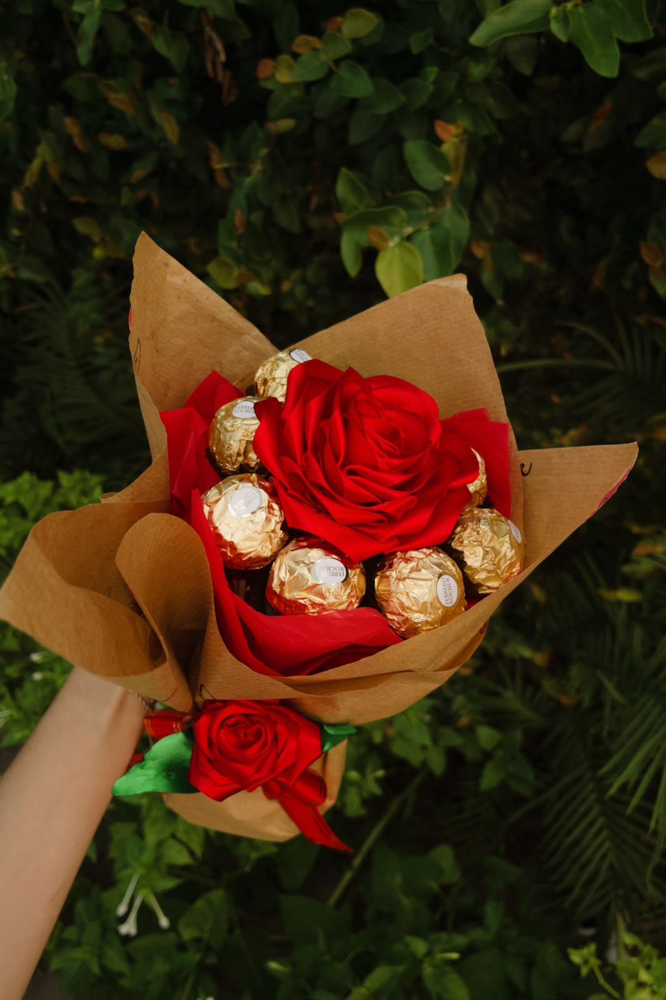
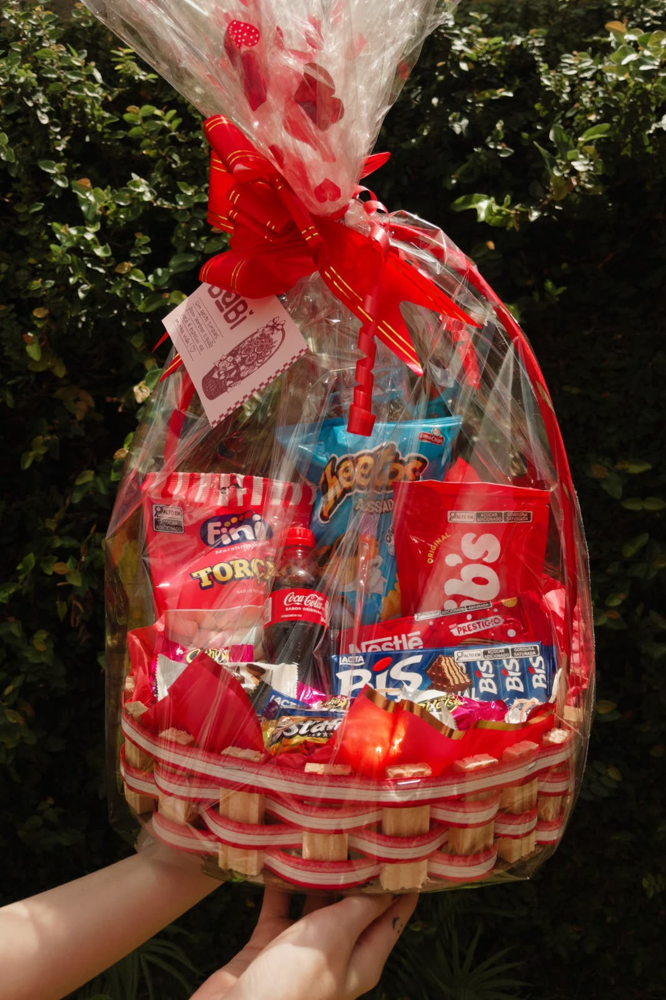

Pequenos gestos. Grandes sorrisos.Tem carinho
Tem carinho
em cada detalhe.
Cestas e buquês para transformar um dia comum em uma boa lembrança.
Conhecer Buquê Ferrero
Para surpreender quem você amaCestas e buquês para transformar um dia comum em uma boa lembrança.
Conhecer Buquê Ferrero
Para surpreender quem você amaEscolha uma cesta e deixe o próximo momento ainda mais especial.
Conhecer Cesta de Guloseimas
Para adoçar um momento especialTente outro nome ou veja todos os produtos.
Conte sua ideia. A gente ajuda a escolher os detalhes.